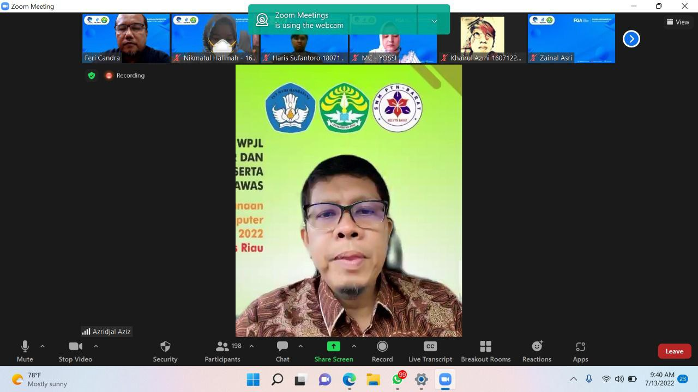
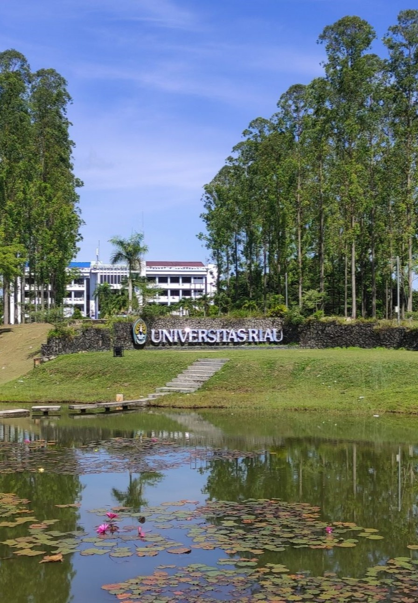
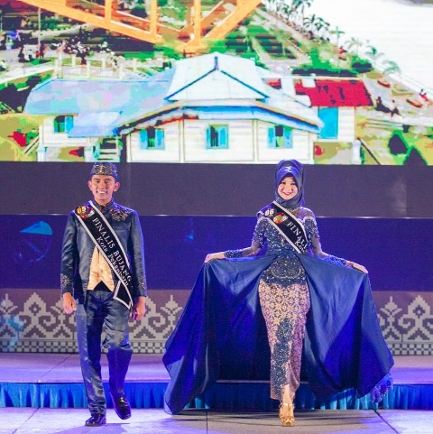

UNIVERSITAS RIAU
Program Studi Teknik Informatika
BERITA

Ani Mardhatillah, Mahasiswa Teknik Informatika Juara 1 Lomba MTQ Kecamatan
12 OKTOBER 2022
OLEH : DIAN RAMADHANI
SELENGKAPNYA >

Prof Azriyenni Guru Besar Teknik Elektro Pertama di Riau
15 JUNI 2022
OLEH : SALHAZAN NASUTION
SELENGKAPNYA >

Dr. Irsan Taufik Ali, ST., MT dosen Prodi Teknik Informatika meraih gelar Doktor di bidang Deep Learning.
21 JULI 2022
OLEH : SALHAZAN NASUTION
SELENGKAPNYA >
KEGIATAN

[EVENT]
Orientasi Program FGA DTS 2022
13 JULI 2022
OLEH : DIAN RAMADHANI
![[EVENT] KULIAH UMUM : Data Analytics for Health Sector](asset/poster-kuliah-umum-data-analytics.jpg)
[EVENT]
KULIAH UMUM : Data Analytics for Health Sector
17 JUNI 2022
OLEH : DIAN RAMADHANI
SELENGKAPNYA >
![[EVENT] WEBINAR : How to Create a Project/Research Poster](asset/flyer-webinar-poster.jpg)
[EVENT]
WEBINAR : How to Create a Project/Research Poster
15 JUNI 2022
OLEH : DIAN RAMADHANI
SELENGKAPNYA >

PRESTASI MAHASISWA
Dzikri Armansyah; Mahasiswa Teknik Informatika UNRI Juara 1 Bujang Dara Kampar
02 JULI 2019
SELENGKAPNYA >

Hakim Ata Attaturk; Mahasiswa Teknik Informatika UNRI Juara 4 Bujang Dara Pekanbaru
18 MAI 2019
SELENGKAPNYA >
POSTER MAHASISWA
Poster Skripsi Mahasiswa – Bulan Mei 2023
11 APRIL 2023
SELENGKAPNYA >
Poster Skripsi Mahasiswa – Bulan April 2023
01 APRIL 2023
SELENGKAPNYA >